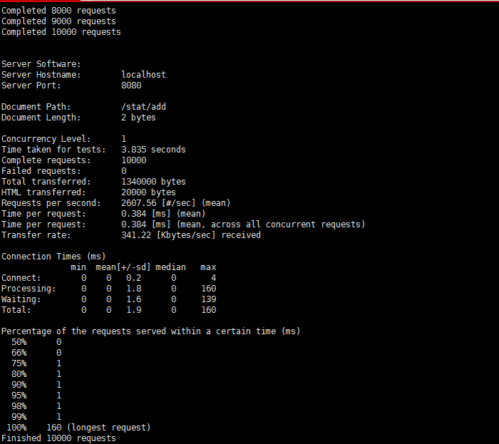
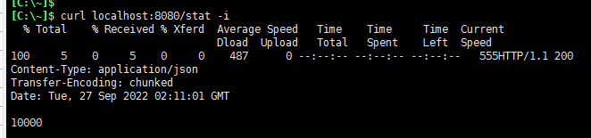
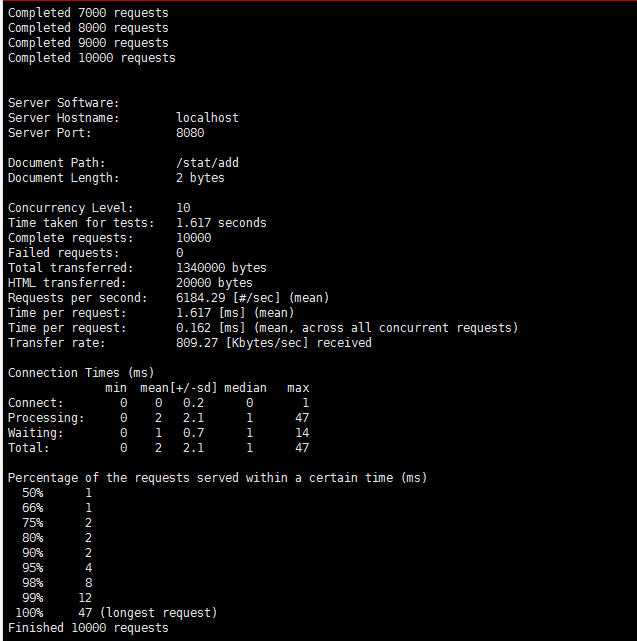
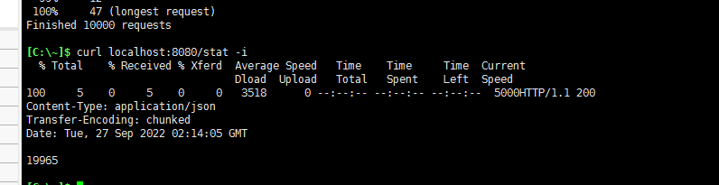
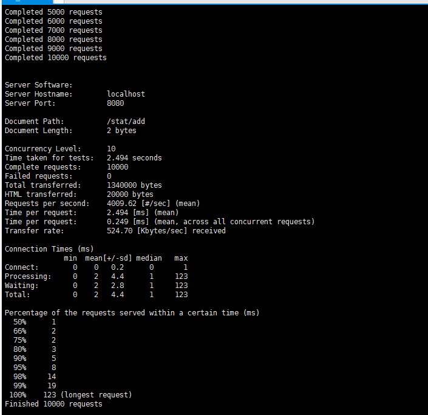
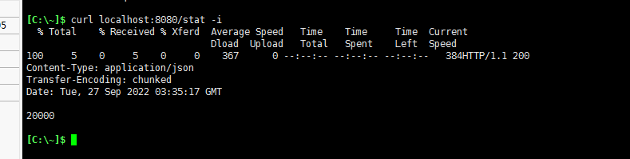

ThreadLocal
四种场景
资源持有 每次用户访问接口时，讲用户数据存储在ThreadLocal中，然后用到的时候直接从其中读取。
资源一致性 JDBC中假如一个事务有多个part，每个part都会获取jdbcConnection、但是获取的connection都是一致的，他用threadLocal帮忙存储了，如果是同一个线程，则返回同一个connection，避免事务id出现问题。
线程安全 共享资源，很难去做线程安全，比如常量stat，每次访问时加一，但是多并发的情景下，stat++这个操作不是原子操作，会读取到寄存器中在临界区进行计算，并发场景下多个线程读取的值可能是一致的，后续设置值会覆盖掉老的值
分布式计算 经典的分布式计算模型，divider讲一个大的任务切分为多个小任务，多个线程同时去跑，最后collector收集起来。省时。
线程不安全压测
1. 经典++问题
@RestController
public class StatController {
public static Integer count = 0;
@GetMapping("stat/add")
public String add() throws InterruptedException {
count++;
return "ok";
}
@GetMapping("stat")
public Integer stat() {
return count;
}
}
由于++操作是非原子性的，线程不安全。所以在并发场景下，最终统计的值会有问题。ab（ApacheBench)压测如下。
ab -n 10000 -c 1 localhost:8080/stat/add

curl localhost:8080/stat -i

！可以看到并发为1的情景下结果是无问题的
但是提高并发测下
ab -n 10000 -c 1 localhost:8080/stat/add

可以看到，在10个并发压测10000个请求。总耗时几乎快了一倍

但是结果是错误的
2. 加锁
第一个想到的肯定是加悲观锁。这样直接就能解决结果不一致的问题。
 
可以看到，解决了数据的正确性问题，但是带来的新问题是，锁是非常耗时的操作，并且在数据量越大的情况下越耗时。所以锁其实是个很危险的操作，不要轻易的去加锁。吞吐量出问题，队列挂掉（队列满了）。
3. ThreadLocal分布式计算
public class StatController {
static Set<Val<Integer>> set = new HashSet<>();
static ThreadLocal<Val<Integer>> count = new ThreadLocal<Val<Integer>>() {
@Override
protected Val<Integer> initialValue() {
Val<Integer> val = new Val<>();
val.set(0);
addSet(val);
return val;
}
};
static synchronized void addSet(Val<Integer> val) {
set.add(val);
}
@GetMapping("stat/add")
public String add() throws InterruptedException {
Val<Integer> val = count.get();
val.set(val.get() + 1);
return "ok";
}
@GetMapping("stat")
public Integer stat() {
return set.stream().map(x -> x.get()).reduce((sum, item) -> sum + item).get();
}
}
public class Val<T> {
T t;
public void set(T t) {
this.t = t;
}
public T get() {
return t;
}
}
这个计算模型的优点在于，每个线程单独统计其中的值，但是，加锁的数量只有线程的数量（每个线程初始化的时候加一次锁，将val存至set中。方便最后能流计算取出总的值。将锁的数量有每此操作+1变成了常量级可控的数量） 理论上来讲，是有道理的。
源码
释放内存 假设是map
作为Entry的父类。 自己实现的hashmap 应该是基于多方考虑，最终选定使用hashmap作为数据结构，不然的话假如spring的一个线程，里面大家都要线程隔离。那么包括框架方也用threadlocal，然后业务员也用threadlocal。线程Thread类中，如果只是个Object。那无法将对象隔离开。同时，也不好区分key